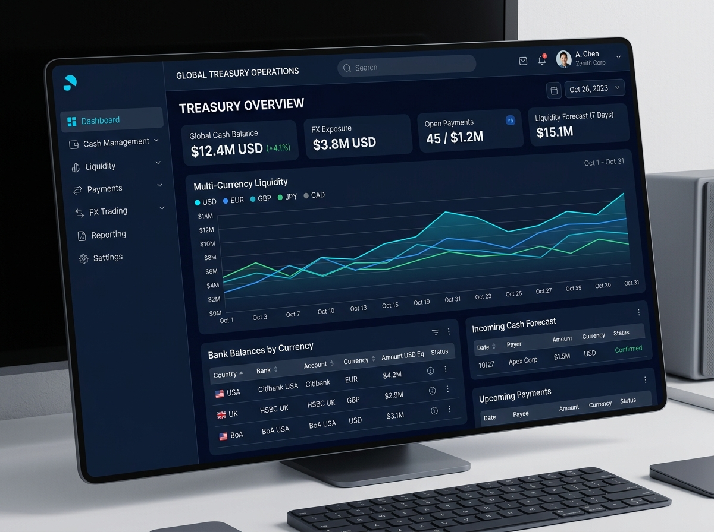

Multi-Currency Liquidity & FX Treasury Platform
Replaced 47 fragmented banking spreadsheets with a unified real-time liquidity desk managing $14.2M weekly cross-border transactions.
+320%
Daily Active User Adoption & 42% Latency Drop